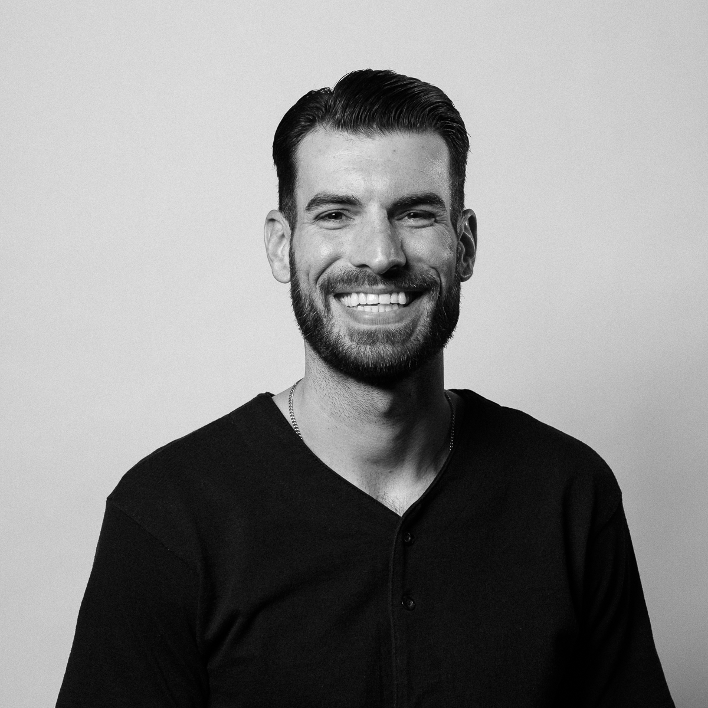
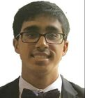
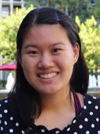
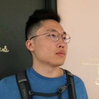

Andrei Irimia, PhD — Principal Investigator
Andrei Irimia is a biogerontologist, biomedical engineer and biophysicist studying neural injury, degeneration, plasticity and repair. His research uses multimodal imaging, network theory and machine intelligence to understand how brain connectivity alterations caused by aging, injury and dementia contribute to cognitive deficits & recovery through rehabilitation. A key component of this is understanding how brain injury and Alzheimer's disease interact. Upon completion of his PhD in biophysics at Vanderbilt University, Prof. Irimia completed postdoctoral studies at UCSD and UCLA, and joined USC Gerontology in 2017. He and his collaborators have pioneered connectograms, an award-winning and popular approach to visualizing the human connectome. His work is funded by the NIH and US Department of Defense and has been recognized by prizes from a number of scientific organizations. Prof. Irimia's research has also been covered by Discover, Scientific American, Nature, Nature Methods, The New York Times, the Los Angeles Times, and his findings have been featured in college-level neuroscience textbooks. At USC, he is a member of both the Neuroscience Graduate Program (NGP) and the Multidisciplinary Training Program in Gerontology. In his free time he enjoys swimming, playing the piano and travel.
Members

Nikhil Chaudhari
Nikhil holds an MS degree in computer science from USC. He has worked on head CT segmentations to calculate cross-sectional trajectories of brain volumetrics in aging populations. He is also interested in cloud computing and in the automatic segmentation of cerebral microbleeds from susceptibility weighted imaging of mild TBI patients.
Nahian Chowdhury
Nahian holds a BS in neuroscience from USC. He is interested in brain connectomics, network theory, in the neuroimaging of geriatric TBI, in the longitudinal analysis of brain circuitry using diffusion tensor imaging, as well as in machine learning.

Ammar Dharani
Ammar is pursuing an undergraduate degree in neuroscience. His research interests include brain aging in health and disease, accelerated cortical thinning in traumatic brain injury and the effects of cerebral microbleeds upon white matter connectivity.
Jun Kim
Jun is an undergraduate student in neuroscience. Her interests include brain mapping, white matter analysis in traumatic brain injury, healthy aging and Alzheimer's disease.
Hyung Jun Josh Lee
Josh is pursuing a BS in neuroscience and mathematics. He is interested in brain aging and in utilizing statistical methods to characterize accelerated brain aging after traumatic brain injury, during mild cognitive impairment and in Alzheimer's disease.
Alexander Maher
Alexander holds a BS in quantitative biology from USC and is now a graduate student in the same program. His primary research focus involves the effects of traumatic brain injury and Alzheimer's disease on the default mode network of the human brain.
Sean Mahoney
Sean completed his BS in Biomedical Engineering at Washington University in St. Louis. He is interested in studying the effects of cerebral microbleeds due to traumatic brain injury and in post-traumatic demyelination of the cerebral cortex.
Van Ngo
Van holds a BS in Human Biology (concentration in Bioethics and Public Science Policy) from UCLA. He is interested in the role of structural connectome alterations associated with cerebral microbleeds due to traumatic brain injury.
Shai Porat
Shai is studying the locus coeruleus using structural and functional magnetic resonance imaging as well as the role of this structure in modulating heart rate variability. His training is in psychology, neuroscience and brain imaging. His primary adviser is Mara Mather and Prof. Irimia is both co-adviser and chairman of Shai's dissertation committee.
David Robles
David holds an MS in psychology from California State University. His interests include neuropsychological testing of older adults with mild cognitive impairment, dementia and mild traumatic brain injury. His skills also include magnetic resonance imaging and statistical analysis.
Kenneth Rostowsky
Kenneth holds a BS in neuroscience from USC. He is interested in dementia, in mapping longitudinal alterations of older adults' white matter circuitry caused by brain injury, and in automated segmentation methods.

Judy Wang
Judy is an undergraduate student in quantitative biology with a minor in neuroscience. She is interested in cortical and white matter aging in health and disease, especially after neurotrauma and in Alzheimer's disease.
Shania Wang
Shania is pursuing a BS in Human Biology and Economics from USC. Her research involves the study of demyelination after traumatic brain injury and the mapping of white matter connectivity in relation to post-traumatic vascular injury.
Former Team Members
Elliot Jacobs
Elliot studied the default mode network (DMN) and how resting state activity in the DMN differs between healthy controls, AD patients and TBI victims. Elliot graduated from USC in 2020 with a neuroscience major and with minors in both astronomy and computer programming.
Maria Calvillo
Maria completed a BS in psychology at the University of Glasgow and an MA in experimental psychology at NYU, focusing on neuropsychology and neuroscience. Her interests include cognitive deficits after mild traumatic brain injury, and their assessment using neurophychological testing.

Sean Lee
Sean holds an undergraduate degree in bioengineering from UC San Diego and a master's degree in computer science from USC. After using statistical analysis and cloud computing to study neuroscience problems, Sean transitioned to an industry position at 23&Me.